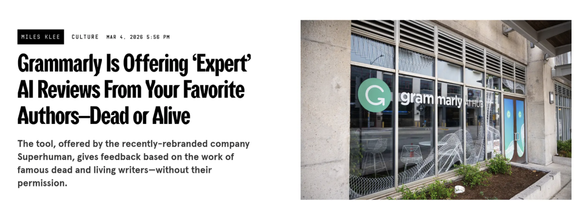
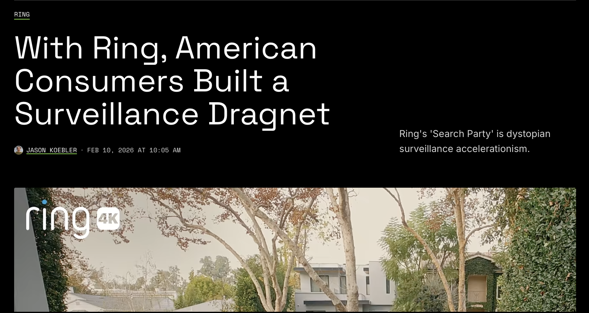

habitat
for users
for developers
We're building
user data agency
on the web.
We're tired of our data being harvested, stolen, and used against us by Big Tech.


Take back control of your data with habitat, now in testing. Built on
ATProtocol
.
↪ Own your
docs.
↪ Own your
calendar.